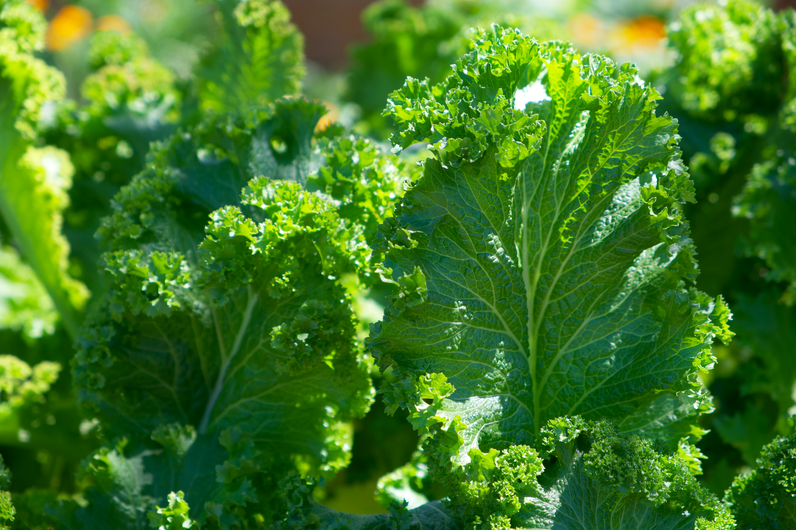

Superfoods are nutrient powerhouses that pack large doses of antioxidants, polyphenols, vitamins, and minerals. Incorporating these foods into your diet can help fight inflammation, boost immunity, and improve overall health.
1. Blueberries

Loaded with antioxidants called flavonoids, blueberries help improve memory and cognitive function. Just one cup provides 4 grams of fiber and 24% of your daily vitamin C.
2. Avocados
Rich in heart-healthy monounsaturated fats, avocados can help lower bad cholesterol. They're also packed with fiber, potassium, and vitamins C, E, K, and B-6.
3. Kale
One cup of kale contains just 33 calories but provides over 100% of your daily vitamin A, C, and K requirements. Its sulforaphane content has potent anti-cancer properties.
4-10. Other Superfoods
- Salmon: Omega-3 fatty acids for brain health
- Quinoa: Complete protein with all essential amino acids
- Turmeric: Anti-inflammatory curcumin compounds
- Greek Yogurt: Probiotics for gut health
- Almonds: Vitamin E and healthy fats
- Sweet Potatoes: Beta-carotene for eye health
- Green Tea: Catechins that may boost metabolism
How to Incorporate Them
Try adding one new superfood to each meal:
| Meal | Suggestions |
|---|---|
| Breakfast | Blueberry smoothie with Greek yogurt |
| Lunch | Kale salad with quinoa and avocado |
| Dinner | Salmon with roasted sweet potatoes |